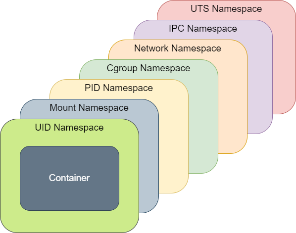
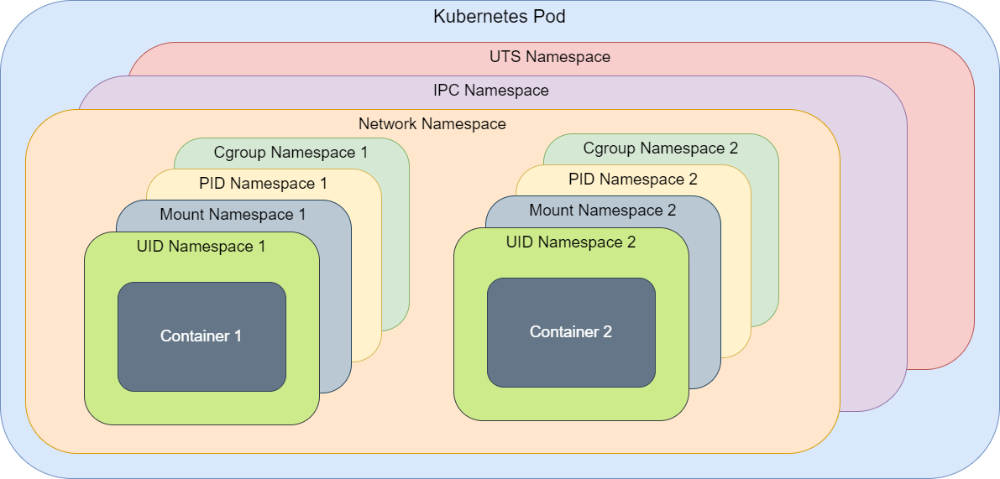

Container & Security
By Sébastien Baillet From
$ whoami
Cloud risks

Summary
Container use and images creation good practices
Containers must not run as root
To prevent the possibility to escape as root, containers must not be executed as root.
Containers must only have the strictly minimum capabilities
A container should be started only with strictly minimum capabilities for it to run.
Capabilities...?

Capabilities...?
Each privileged operation is associated with a capability
Capabilities Demos
With NET_BIND_SERVICE capability
Container engine & capabilities
Docker engine starts container with default capabilities described in Docker documentation.
This default list may be overloaded in Docker daemon configuration or at container start.
Capabilities Demos
With CHOWN capability
Capabilities Demos
With SETUID capability
Drop capabilities in k8s
apiVersion: v1
kind: Pod
metadata:
name: demo-pod
spec:
containers:
- name: demo
image: demo
securityContext:
capabilities:
drop:
- NET_BIND_SERVICE
- SETUID
Very dangerous capabilities
- CAP_SYS_ADMIN
- CAP_SYS_PTRACE
- CAP_SYS_MODULE
- CAP_DAC_READ_SEARCH
- CAP_DAC_OVERRIDE
Very dangerous capabilities
Complete list on HackTricks and explanation on how to exploit
Golden source
The image you build your image from should be trustable:
- the base image is build and maintained by your organisation,
- otherwise, the base image is tagged as official in Docker Hub, Quay, ...
Images must contain only the strict minimum
Images should contain only the strict minimum to allow the application to run.
Images must contain only the strict minimum
For example:
- No shell/bash,
- No package manager,
- No compiler (GCC, JDK...),
- ...
- No any other tool not required by the application.
Multi-Stage builds and Distroless example
FROM maven:3.6.1-jdk-11-slim AS builder
WORKDIR /app
COPY . /app/
RUN mvn -T4 package -DskipTests
FROM gcr.io/distroless/java:11
COPY --from=builder /app/target/app.jar /app.jar
USER 1000
ENTRYPOINT ["java", "-server", "-jar", "/app.jar"]
Minimalist images
Container must be read-only
Containers should be run read-only.
Only necessary read-write mounted volume will be writable: ideally none!
Container must be read-only
The Kubernetes equivalent option is readOnlyRootFilesystem, for example:
apiVersion: v1
kind: Pod
metadata:
name: volume-test
spec:
containers:
- name: container-test
image: busybox
securityContext:
readOnlyRootFilesystem: true
volumeMounts:
- name: all-in-one
mountPath: "/projected-volume"
readOnly: true
Secret must not be embedded in image
No secret in image!
Never
No exception
Enforce policies in k8s
Use tools to enforce policies in your clusters, like Gatekeeper.
How the hell can I work with such hardened images?
What are containers?
Containers are process "executed" by the host kernel, using chroot, namespace, and cgroups to provide isolation and resource limits.
Image file system

Image file system

Dive demo
Namespaces
Namespaces are a feature of the Linux kernel that partitions kernel resources. Processes that share the same namespace can see each other resources given the kind of the namespace.
Namespaces
Namespace kind list:
- Process ID (PID)
- Network
- Mount
- Inter-Process Communication (IPC)
- Unix Time Sharing (UTS)
- User ID (UID)
- Time
- Control Group (cgroup)
Container Isolation
By default, when a Docker container starts, it starts with his own namespaces, assuring isolation from host
Container Isolation
Docker offers the possibility to join other container or host namespaces.
Demo
Let's join a container network/pid namespace
These options are available with Docker compose
version: '3.7'
services:
oauth2-proxy:
image: quay.io/oauth2-proxy/oauth2-proxy:v7.7.0
ports:
- "3000:3000"
volumes:
- ./oauth2-proxy-keycloak.cfg:/oauth2-proxy.cfg
myapp:
image: containous/whoami
network_mode: service:oauth2-proxy
pid: service:oauth2-proxyPod Isolation
Pods (atomic unit of Kubernetes deployment) can contain one or more containers.
Pod PID namespace
You can share PID namespace between pod containers:
apiVersion: v1
kind: Pod
metadata:
name: my-app
spec:
shareProcessNamespace: true
containers:
- name: my-app
image: my-app-image:12
- name: my-other-app
image: my-other-app-image:14
Ephemeral container
Stable feature since Kubernetes 1.25
kubectl debug -it --image my-debugging-toolbox \
my-pod-XXXXXXXXX [--target my-container]
Pod Isolation
Demo: Playing with pid & network namespace
Patch management: why and what for?
Patch management: purpose
- Avoid known vulnerabilities in third party applications on servers
Patch management: how to?
- Patch as frequently as possible
- Know the exact state of the patch management on your server pool at any moment
Container & Patch Management
So...?
- Update dependencies in your image (and rebuild it...)
- Deploy often
- Scan your images regularly
Let's see some tools...
...that can help you out
Dependency scanner
80% of your code is not made by your team. Use scanner to detect known vulnerabilities in your dependencies.
For example: Dependabot, Checkmarx SCA, Trivy, J-Frog X-Ray, Renovate...
Trivy
- Generate SBOM
- Find Known vulnerabilities
- Find IaC issues/misconfigurations
- Sensitive information and secrets
- Find problematic licenses
Copacetic
Directly patch container image vulnerabilities.
Useful for unmaintained images.

NeuVector
- WAF
- DLP
- Image CVE scanner
- Policies
- Sigstore
k8s network isolation
No isolation at all by default !!!
Use network policies
k8s network isolation
apiVersion: networking.k8s.io/v1
kind: NetworkPolicy
metadata:
name: my-network-policy
namespace: my-namespace
spec:
podSelector: {}
policyTypes:
- Ingress
ingress:
- from:
- namespaceSelector:
matchLabels:
kubernetes.io/metadata.name: grafana-agent-ns
- namespaceSelector:
matchLabels:
kubernetes.io/metadata.name: ingress-controller-ns
Takeaway
- Container must not run as root,
- Container should have the strictly minimum capabilities,
- Build minimalist images,
- Run container read-only,
- No secret in images,
- Monitor and update your dependencies,
- Deploy often,
- Don't forget k8s network policies.
Any questions?
Thank you for your attention